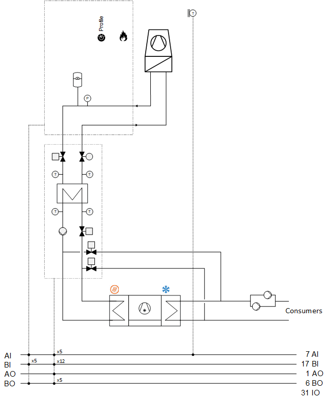
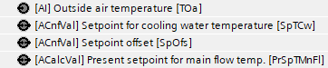
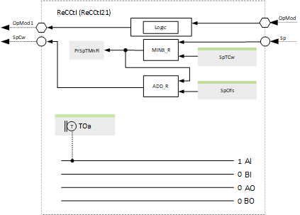
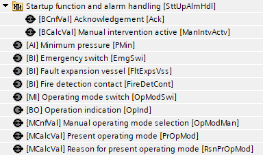
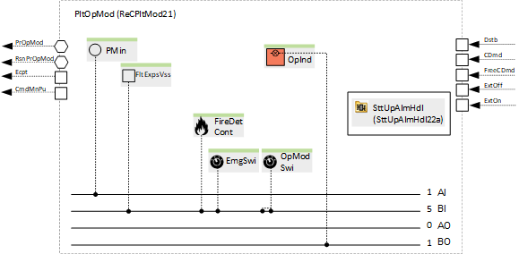
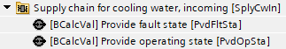
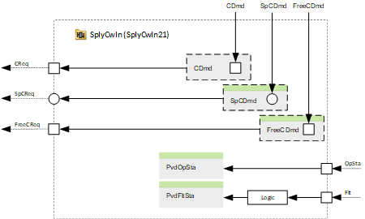

[ReCFreeCExg21x] Recooling & free cooling exchanger
Name: [ReCFreeCExg21x] Recooling & free cooling exchanger
Library hierarchy: Plants
Plant operating modes
- Off
- On
Plant diagram

Main functions | Main components |
|---|---|
|
|
Program blocks
Cooling exchanger | |
[CExg21] Cooling exchanger, temperature-controlled, with primary valve and secondary pump | |
|
|
Sensors, setpoints and control | |
[ReCCtl21] Sensors, setpoints and control for recooling unit | |
 |  |
Plant operating mode | |
[ReCPltMod21] Plant operating mode determination for recooling | |
 |  |
Supply chain for cooling water, incoming (Optional) | |
 |  |
Supply chain for cooling water, outgoing (Optional) | |
|
|